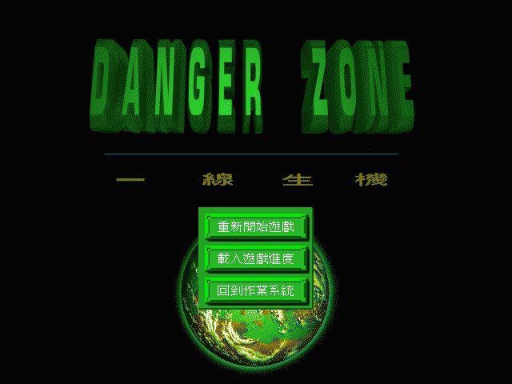
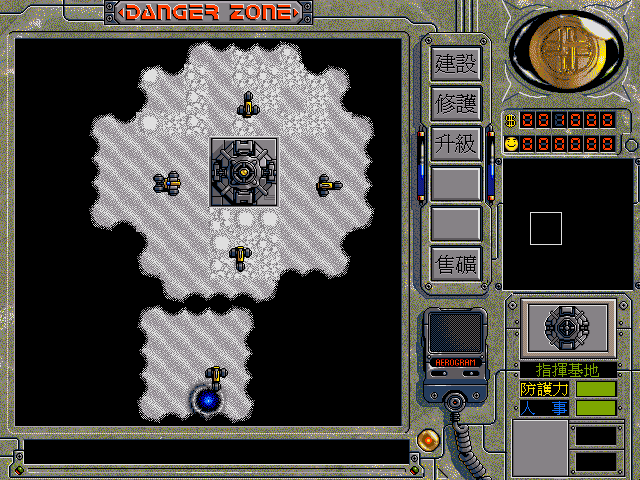

名稱：一線生機 (Danger Zone，中文版)
簡介：宏申1995年出品的即時戰略遊戲，係以基地為基礎，在地圖上相互發展攻防的遊戲。
遊戲中分成托迪人、錫爾南人、雷特曼人等三個劇本，各有不同的難度，玩家可由易
而難，逐步熟悉遊戲中的戰略規則。而遊戲的戰略過程，大體是以建造電廠為基礎，
生產電力供其他設備使用，然後建造原礦倉庫，採礦收集資金，之後再利用資金建造
各種武器兵工廠等，然後生產各式戰鬥車種進行攻防。整體而言，這個遊戲的娛樂性
很好，操作也很簡便，戰鬥也頗具挑戰性，算是一個不錯的戰略遊戲。


備註：本版為DOS光碟版，國語請執行PLAY.BAT，粵語請執行HKDANGER.BAT。
保護：DOS光碟版無保護，DOS磁片版為圖案密碼，破解碼：
MAIN.EXE
83 FF 03 7D 09 (不用輸入密碼)
-- -- -- EB --
或
E8 98 09 3D (不用輸入密碼)
90 90 90 --
或
E9 B3 FD 6A (不用輸入密碼)
90 90 90 --
或
3B 07 75 06 (密碼隨便輸入)
-- -- -- 00
或
83 FE 04 75 07 (密碼隨便輸入)
-- -- -- 90 90
Windows光碟版為光碟，破解碼（放入光碟才有背景音樂）：
danger.EXE
83 F8 FF 75 0E 6A 10
-- -- -- EB -- -- --
備註：本遊戲有1995年DOS版與1999年Windows版等兩種光碟，前者有語音，後者無語音。
備註：Windows版非安裝移機者，需修改danger.cfg裡記錄的光碟機代號（破解版不用）。
備註：目前尚不清楚DOS磁片版、DOS光碟版、Windows光碟版的遊戲內容是否有差異。
檔案：danger-disk.rar = 磁片版
danger-win.rar = Windows光碟版
密技：
1.首先，需讓指揮基地升級然後建造裝甲基地，當進入裝甲基地後選取輕裝甲車或重裝甲車，
按OK。回到主畫面馬上按裝甲車ICON停止製造。按製造進入裝甲基地後選取輕裝甲車或重
裝甲車，按OK。回到主畫面就可以發現如選輕裝甲車可以增加$200，如選重輕裝甲車可以
增加$100。重複前述步驟就可以一直增加錢，直到此輛車建造完成為止。
2.建造裝甲車有一定的數量，當建造到最後一輛時，先按裝甲車ICON停止製造，再按製造ICON
一次，發現已無法進入裝甲基地選購車輛畫面，再馬上按裝甲車ICON繼續建造到完成，然
後按裝甲ICON一次，嘿嘿！錢會一直自動增加到$999999，比拉把(吃角子老虎)還過癮吧！
可是在這段期間不能有任一輛車被毀，否則會停止加錢。如果用坦克基地則加錢的速度會
比裝甲基地快10倍以上，但無法像裝甲基地那樣一次增加$100或$200，可能對後幾關比較
有用。
攻略：（作者－青衫）
遊戲中的劇本分為托迪人、錫爾南人、雷特曼人等三種，以下只說明最簡單的
托迪人部份，其餘請自行研究。
第１－１關
勝利條件：採礦增加資金至３０００
說明：首先要鋪設地板，接著建造原子電場，然後建造原礦倉庫，即可開始採
礦（藍色坑洞即是）。由於本關只要採礦增加資金，因此大約只要將基
地週遭三個礦池採完，大概便能過關了。不夠的話，西北還有一個。再
不夠的話，西南也有一個，不過有一隻敵軍。若真的要到西南的話，最
好讓所有裝甲車一起行動，遇到敵軍時多打一較為有利。至於東北有３
隻敵軍，頗危險，不去為宜。
第１－２關
勝利條件：破壞敵軍全部基地
說明：建完電場及原礦倉庫，然後採礦賺夠錢後，儘快讓基地升級，然後建立
裝甲基地，前去攻打東南的敵方基地。若錢不夠，要多找一些礦池，不
過在東北、西南和東邊各有一隻敵軍。儘量讓裝甲車一起行動即可。
第１－３關
勝利條件：攻佔敵方首都
說明：敵方基地在東南。
第２－１關
勝利條件：採礦增加資金至３５００
說明：基地上方有一個礦池，下方有兩個礦池，但附近都有敵人，最好先佔領
上方礦池採礦將基地升級，並建立裝甲基地，以優勢武力到各地找礦池，
不過大約只要幾個礦池就夠了。左上角則為敵方基地。
第２－２關
勝利條件：採礦增加資金至４０００，並消滅所有敵人
說明：基地上方有礦池，敵方基地在東北，其他礦池集中在敵我基地的中央地
帶。
第２－３關
勝利條件：消滅所有敵人
說明：一開始下方會出現敵人，先集中兵力將之消滅，然後集中到右邊找到礦
池並消滅敵人。只要建出裝甲基地，以後便簡單了。
第２－４關
勝利條件：在（４，５８）處建立指揮基地
說明：建立指揮基地在最西南角，只需沿著上方往左再往下即可。注意由於裝
甲車數量有限，因此要集體行動，清掉路上的敵人。至於建造車可先放
著，等找到地方後再將它移過來。
第２－５關
勝利條件：消滅敵人並進行移民
說明：先建出裝甲基地或坦克基地消滅敵人後，再進行移民即可。基地左右兩
邊都有礦池，但右邊有１隻敵軍。
第３－１關
勝利條件：摧毀所有敵軍建物
說明：最初的礦池在下方，並沒有敵人。而敵人基地在右方，但只需摧毀建物
就好，至於最右邊的敵軍可不用理它們。由於敵方建物有火箭炮台，因
此要靠火箭坦克遠距先行摧毀。可派一些機動部隊調查出炮台位置。
第３－２關
勝利條件：摧毀所有敵軍建物
說明：敵軍基地在下方，附近有相當多的兵力。另外，左下與右上也集結了不
少敵軍。
第３－３關
勝利條件：支援基地，並採礦增加資金至２０００
說明：頗難的一關。由於基地一開始便會被圍攻，因此部隊必須趕緊趕往右下
角的基地支援。只要能穩住基地狀況，大致便沒什麼問題了。
第３－４關
勝利條件：除去敵方指揮基地
說明：本關其實並不難，由於沒有敵人，只有東邊的敵方基地而已，因此可從
容地處理。首先讓機動部隊去探查出基地的狀況，由於敵方基地有甚多
的火箭炮台，因此必須建出火箭坦克來攻擊。不過由於礦池只有一個，
錢無法增加很多，因此要算準距離攻擊，避免火箭坦克陣亡。其他近距
離攻擊的部隊，用來進行偵查即可。
第３－５關
勝利條件：消滅敵方所有建物
說明：最初的礦池在東南方，有少數的敵軍。敵方基地在東北方，西北方則集
結大量敵軍。